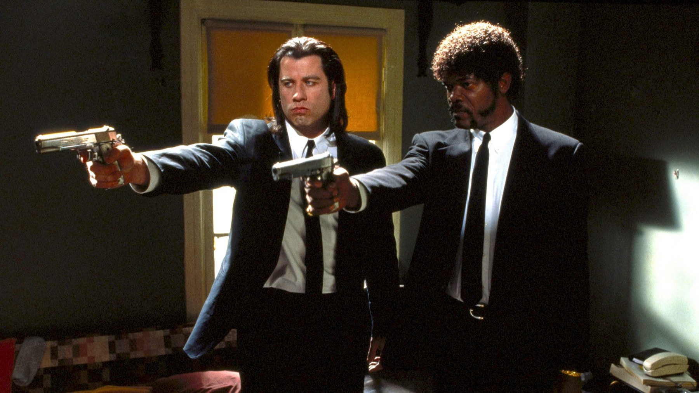

Pulp Fiction, Ezechiele 25:17: è nella Bibbia? (spoiler)
Il versetto che Jules recita prima di sparare è quasi tutto inventato: ecco cosa dice davvero la Bibbia in italiano, da quale film di karate arriva e perché alla fine cambia significato
Il discorso di Jules funziona proprio perché è falso. Ezechiele 25:17 è il versetto più citato da chi la Bibbia non l'ha mai aperta, eppure quasi nessuna di quelle parole sta nel libro: Tarantino ha montato frasi di provenienza diversa e un'apertura da film di karate, e così ne ha fatto un rito. Da qui in poi parliamo anche della scena finale.
Cosa dice davvero il versetto
Il capitolo 25 di Ezechiele raccoglie condanne contro quattro popoli vicini a Israele, e i Filistei sono l'ultimo di una serie. Il versetto 17 chiude quella sui Filistei. Nella Bibbia CEI 2008 il Signore promette ai Filistei «terribili vendette» e «castighi furiosi», e conclude che così sapranno chi è. Poco prima il Signore dice di voler sterminare i Cretei e annientare il resto della costa del mare.
È una minaccia contro un popolo, in due righe, ma di quello che Jules recita non c'è quasi niente. Nel versetto non c'è nessun pastore e nessun uomo giusto assediato dagli egoisti: c'è solo la vendetta del Signore. Il discorso di Jules prende quelle ultime parole e le monta sopra un'apertura che nella Bibbia non esiste, ed è questo il motivo per cui suona vero a tutti, anche se non lo è.

Il film di karate dietro la citazione
Il testo viene da un film giapponese di arti marziali del 1973 con Sonny Chiba, Karate Kiba, che in inglese circola come The Bodyguard. Una frase quasi identica apriva la storia: il protagonista si presentava come «Chiba il guardiaspalle», e nella sceneggiatura di Pulp Fiction al suo posto c'è il nome del Signore. Il legame con Chiba non finì lì: Tarantino lo volle in Kill Bill: Volume 1, nel 2003, nei panni dell'artigiano di spade Hattori Hanzō.
L'idea del sermone prima dell'esecuzione, invece, arriva da una serie giapponese, Shadow Warriors, i cui episodi finivano con una predica sulla morale rivolta alla vittima. Tarantino raccontò che lui e i suoi amici ne erano affascinati, perché trovavano quei finali «cool e poetici», e che in quello spirito mise la citazione in bocca a Jules. Il resto è lettura nostra: sapendolo, Jules sembra meno un cattivo che sfoga la rabbia e più un giustiziere che officia una cerimonia, e il tono quasi cortese con cui chiede a Brett «Leggi la Bibbia?» prende un altro peso.
La scena che vale il film
Il discorso arriva solo alla fine, perché Tarantino prima costruisce la tensione. Jules e Vincent entrano nell'appartamento dei ragazzi che hanno tradito Marsellus Wallace, interrompono la colazione e chiedono con garbo che cosa mangiano: hamburger del Big Kahuna Burger, il locale hawaiano che nel film torna più volte. Jules ne morde uno e chiede a Brett come si chiama in Francia il quarto di libbra con formaggio: risponde Vincent, «Royal con formaggio», e sul perché Brett tira fuori il «sistema metrico decimale». Si fa dare la Sprite «per mandare giù il burro», sempre con quel garbo da ospite. Poi spara a Roger e il tono sale: davanti a Brett che balbetta sbotta con un «Di' cosa un'altra maledettissima volta!» e infine gli chiede «Leggi la Bibbia, Brett?». Dal garbo alla furia il registro cresce per gradi, ed è questo il rito. Dopo il versetto Jules e Vincent sparano a Brett, e subito dopo Jules e Vincent ricevono, dal bagno, una raffica che non li tocca. Il nostro parere è netto: la scena regge perché il testo è falso. Una citazione fedele sarebbe stata una frase di Bibbia e basta, mentre il discorso rimontato ha il ritmo di una predica e la sicurezza di un sicario che parla da profeta, però senza mai diventare una parodia.
In italiano Jules ha la voce di Luca Ward, e il discorso nel doppiaggio parte con «Ezechiele 25, 17» e prosegue con il cammino dell'«uomo timorato», assediato dalle «iniquità» degli egoisti, e con la «tirannia» dei malvagi. Poi arriva il pastore che cerca i «figli smarriti», e la chiusa, tutta di «grandissima vendetta» e «furiosissimo sdegno». Quei superlativi sono lontani dalle due righe sobrie della Bibbia, e proprio per questo il discorso diventa una cantilena che minaccia dall'alto. C'è poi un passaggio che nella Bibbia non esiste: dove la Bibbia chiude con il riconoscimento del Signore da parte dei Filistei, Jules dice a Brett «il mio nome è quello del Signore», cioè si presenta come il braccio della vendetta, e la minaccia da profezia contro un popolo diventa puntata su Brett, a due metri da lui.
Il finale rovescia tutto
Nella scena finale, al tavolo del bar, il discorso torna e cambia segno. Jules è convinto che la raffica sfuggita all'uomo uscito dal bagno, che ha mancato entrambi da pochi passi, sia stata un miracolo, perciò vuole lasciare la vita da sicario. A Pumpkin, che sta rapinando il locale, spiega il passo con tre figure, l'uomo giusto, la tirannia dei cattivi e il pastore, e quando racconta chi vuole essere adesso sceglie il pastore, anche se ammette di provarci con fatica. Nel discorso c'era una minaccia, mentre ora c'è un invito, quindi è in questo scarto, più che nel versetto, che il film dice la sua cosa più seria.
Il limite sta proprio qui, nella seconda volta. L'esecuzione di Brett è un pezzo di cinema quasi perfetto perché nessuno spiega niente; al bar invece Jules passa in rassegna a parole le letture possibili del passo, e per un attimo il film smette di fidarsi dello spettatore e gli consegna la lezione. Funziona grazie all'attore, perché Jackson regge qualsiasi battuta, ma resta la scena meno misteriosa del film. Dispiace, perché la prima volta era stata costruita molto meglio.
I numeri, in un solo paragrafo
Pulp Fiction è diretto da Quentin Tarantino, dura 154 minuti ed è uscito negli Stati Uniti il 14 ottobre 1994 e in Italia il 28 ottobre, due settimane più tardi. Nel 1994 ha vinto la Palma d'oro al Festival di Cannes e, tra le sette candidature agli Oscar, ha portato a casa quello per la miglior sceneggiatura originale, firmata da Tarantino e Roger Avary.
A chi lo consigliamo, e a chi no
Lo consigliamo a chi conosce il discorso solo dai video e dai meme e non ha mai visto il film, perché la scena pesa il doppio quando si sa che Jules la riprende alla fine. Lo consigliamo anche a chi vuole capire come Tarantino costruisce le sue citazioni, perché non inventa dal nulla ma prende un pezzo qui e uno là, e il risultato sembra antico. Non lo consigliamo a chi non sopporta la violenza esplicita né a chi cerca un film con una trama lineare, perché Pulp Fiction invece salta avanti e indietro tra storie diverse. Chi vuole il versetto vero può leggersi il capitolo 25 di Ezechiele, che sta in due pagine.
Il versetto di Jules non è nella Bibbia, e per fortuna: Tarantino lo trasforma in un rito, e nel finale lo capovolge da minaccia a invito; il suo unico peccato è spiegarcelo a parole.
Domande frequenti
Ezechiele 25:17 dice davvero quello che dice Jules?
No, quasi per niente, perché nel libro di Ezechiele il versetto fa parte di una profezia contro i Filistei e parla solo della vendetta del Signore; la parte iniziale del discorso di Jules è costruita con frasi di altra provenienza, e solo la chiusa sulla vendetta somiglia al testo vero.
Da dove ha preso Tarantino il discorso?
Da un film di arti marziali del 1973 con Sonny Chiba, Karate Kiba (in inglese The Bodyguard), in cui compare una citazione quasi identica all'inizio, ma al posto di «il Signore» c'era il nome del protagonista, «Chiba il guardiaspalle»; l'idea del sermone prima dell'esecuzione, invece, viene dalla serie Shadow Warriors.
Cosa significa il discorso alla fine del film?
Nella scena finale Jules lo interpreta in modo diverso: dopo essere scampato a una raffica, che ritiene un miracolo, non lo usa più come minaccia ma come un invito a cambiare vita, perché ora vuole farlo davvero, e dice che sta cercando di diventare il pastore.
Chi doppia Jules in italiano?
Nell'edizione italiana di Pulp Fiction Samuel L. Jackson ha la voce di Luca Ward, che nel discorso scandisce «grandissima vendetta e furiosissimo sdegno».